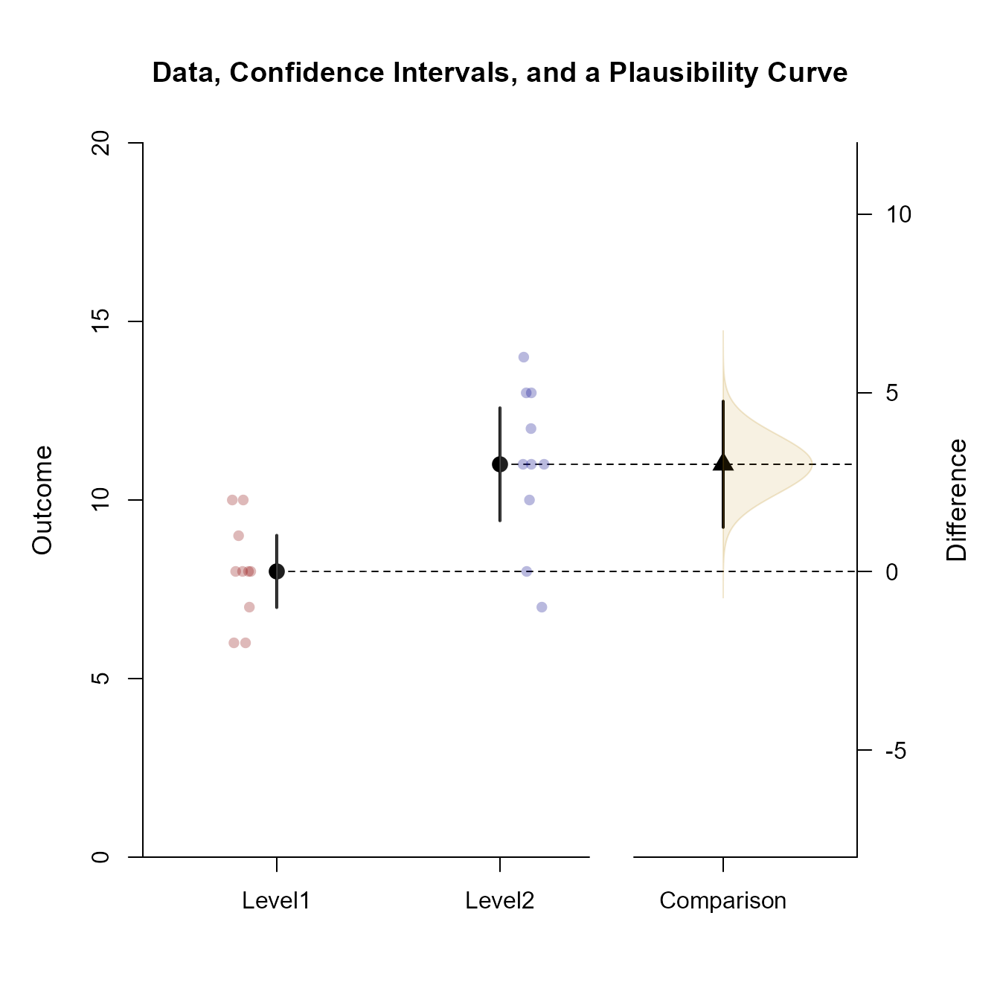

This page examines a single-factor between-subjects (one-way) design using raw data input, adding data, color, and plausibility curves to plots of comparisons and contrasts.
Analyses of the Means
As shown elsewhere, the standard EASI plot includes just the confidence intervals for means plus their values.
(Outcome ~ Factor) |> plotMeans()To enhance the plot to match other implementations of estimation statistics, it can be layered with data plots, have plausibility curves added, have colors modified, and have the values suppresed.
(Outcome ~ Factor) |> plotData(main = "Data, Confidence Intervals, and Plausibility Curves", method = "swarm", offset = -.15, col = c("darkred", "darkblue", "darkgoldenrod"))
(Outcome ~ Factor) |> addMeans(values = FALSE, line = 9, col = c("darkred", "darkblue", "darkgoldenrod"))
(Outcome ~ Factor) |> addPlausible(col = c("darkred", "darkblue", "darkgoldenrod"))Analyses of a Comparison
Select levels for a comparison and get a simple plot of the confidence intervals and values.
(Outcome ~ Factor) |> focus(Level1, Level2) |> plotComparison()
Get an enhanced plot that includes the data along with a plausibility curve just for the comparison.
(Outcome ~ Factor) |> focus(Level1, Level2) |> plotComparison(main = "Data, Confidence Intervals, and a Plausibility Curve", values = FALSE, ylim = c(0, 20))
(Outcome ~ Factor) |> focus(Level1, Level2) |> addPlausible(col = c("white", "white", "darkgoldenrod"))
(Outcome ~ Factor) |> focus(Level1, Level2) |> addData(method="jitter", offset= c(-.15, .15), col = c("darkred", "darkblue"))
Analyses of a Mean Contrast
Create a contrast and get a plot of the mean subsets and the contrast (along with their values).
(Outcome ~ Factor) |> plotSubsets(contrast = c(-1, .5, .5), labels = c("Level1", "Others"))Create an enhanced plot of the mean subsets, adding a plausibility curve to the subsets and the contrast. (Due to the combination of levels, data are not plotted.)
(Outcome ~ Factor) |> plotSubsets(contrast = c(-1, .5, .5), main = "Confidence Intervals with Plausibility Curves", labels = c("Level1", "Others"), ylim = c(0, 20), values = FALSE, col = c("blue", "forestgreen", "black"))
(Outcome ~ Factor) |> addPlausible(contrast = c(-1, .5, .5), type = c("right", "right", "right"), col = c("black", "black", "black"))